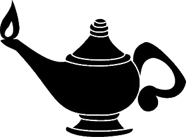

La violencia no es normal.
Reconocerla es el primer paso para detenerla. Aquí encontrarás qué es, cómo prevenirla y dónde pedir ayuda.
Empezar
Reconocerla es el primer paso para detenerla. Aquí encontrarás qué es, cómo prevenirla y dónde pedir ayuda.
EmpezarFísica, psicológica, sexual, económica o digital: no todas dejan marcas visibles.
Ver los tiposSe previene con educación, con límites claros y con comunidades que no miran hacia otro lado.
Cómo prevenirlaSi tú o alguien cercano está en peligro, hay líneas de ayuda disponibles hoy.
Pedir ayudaEs cualquier acción u omisión que busca controlar, dominar o dañar a otra persona. Puede ocurrir en la casa, la escuela, el trabajo, la calle o internet, y afecta la salud física y mental de quien la vive y de quien la presencia.
La Organización Mundial de la Salud la define como el uso intencional de la fuerza o el poder, real o como amenaza, que causa o tiene muchas probabilidades de causar lesiones, muerte, daño psicológico o privaciones.Resumen de la definición de la OMS
Golpes, empujones, jalones o cualquier agresión contra el cuerpo.
Insultos, humillaciones, amenazas, celos extremos y aislamiento.
Cualquier acto sexual sin consentimiento, incluido el acoso y las insinuaciones forzadas.
Controlar el dinero, quitar el sueldo o impedir que alguien trabaje.
Acoso en redes, vigilancia del celular, difusión de fotos íntimas sin permiso.
Bullying, agresiones entre pares y violencia en espacios públicos.
Lee cada situación y decide. Al final verás tu puntaje.
Mueve la barra y mira qué tan grave se vuelve una conducta. Lo que empieza con una “broma” puede escalar.
Elige tu frase, escribe tu nombre si quieres y crea tu tarjeta. En celular, mantén presionada la imagen para guardarla; en computadora, clic derecho y guardar imagen.
Estas instituciones publican datos, guías y programas de protección.
Llama a emergencias. Toca el número para marcar desde tu celular.
Los números corresponden a México. Verifica que sigan vigentes en las fuentes oficiales.
Proyecto de alumnos de Enfermería para la materia Didáctica para la Salud. División de Ciencias de la Salud, Universidad Autónoma del Estado de Quintana Roo.